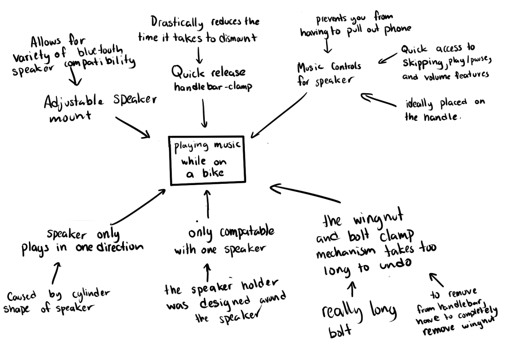
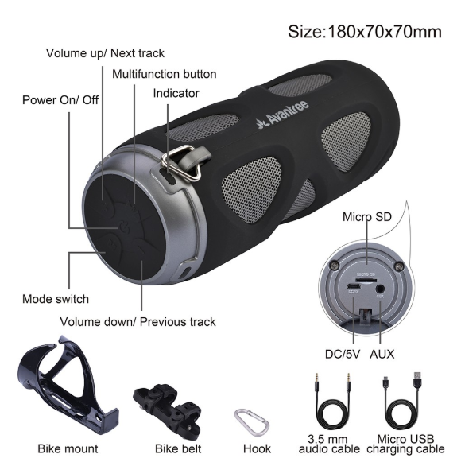
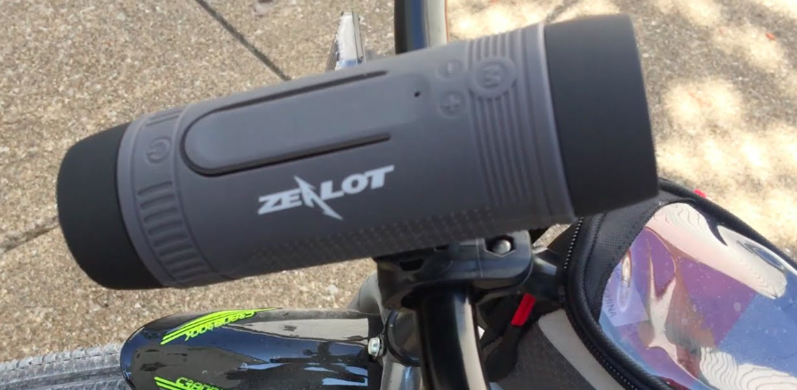
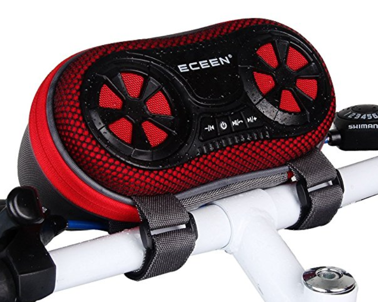
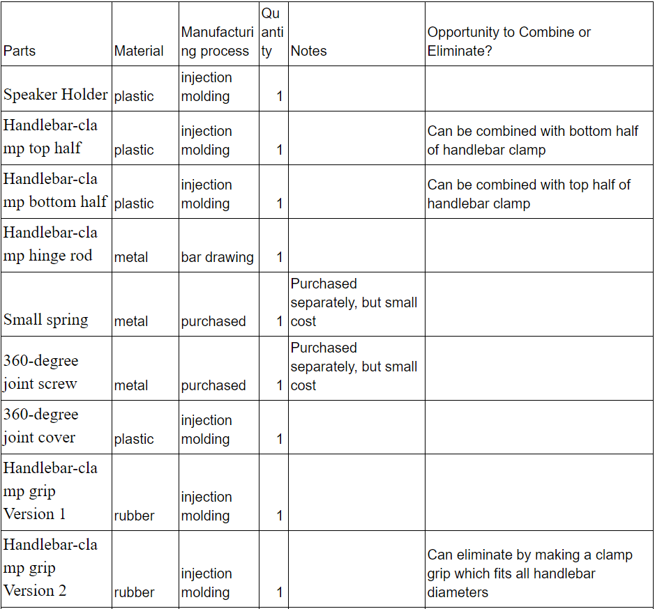
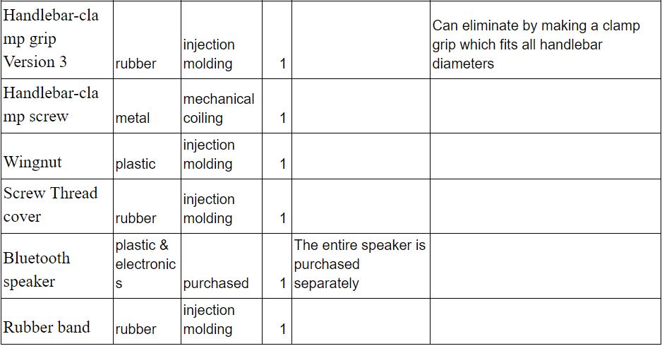

Product Tree Analysis:

Competitors:



Our team chose to improve the speaker holder. As we inspected our speaker, we noticed
that the designers of this product had
taken into account that this needed to be fit for usage on a bicycle, and one area they factored this into
was in the materials. It was clear that they knew that the speaker would have to endure the environment it
would be in, whether it ranged from heavy rain or bumpy roads. They accomplished this by using strong, but
cheap, injection molded plastic in areas throughout the speaker which included the holder and base. They
also used a rubber gasket for holding the speaker in the clamp. Upon inspection, one improvement that could
be made is regarding the speaker clamp where the whole component could be made out of an elastic material
like rubber. This could reduce the amount of parts required to make this product and reduce the amount of
material mass as well, resulting in a lighter weight for the speaker. The substitution for the rubber like
material would grant the holder more friction which in cause would lead to less material required to keep
it in place.
Our DFM chart:


After analyzing our product, we have discovered a few ways in which we can combine or eliminate parts to achieve simplicity. First, the Scosche bike speaker which we purchased comes with three different clamp grips which each fit bike frames of different sizes. However, we believe that we could eliminate the need for multiple clamps by making an adjustable clamp which can fit bike frames of all sizes. In addition, we wish to similarly utilize an adjustable clamp in order to combine the bottom and top half of the handlebar clamp into a single sub-assembly. Although we have considered the elimination of excess fasteners, we ultimately decided that most of the fasteners in this product are necessary to hold the product together. However, we are interested in color-coding parts to make them easily distinguishable from one another. We came up a few designs afterwards, and please CLICK THE "IMPROVED DESIGN" BUTTON TO CHECK IT OUT